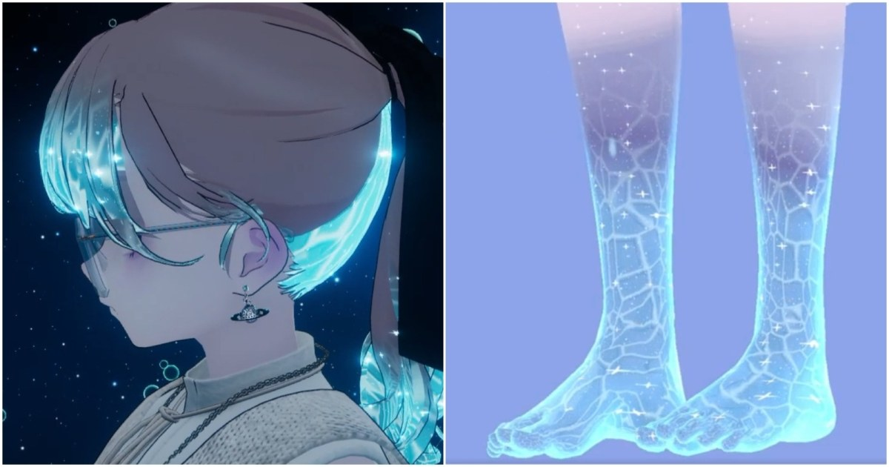

AquaGlow：以 lilToon 疊出可調式水下角色效果
VRChat 用的 AquaGlow shader 可套在頭髮、身體與衣物，提供顏色、波紋尺度與動畫速度控制。

Shader ★★★★☆
完整分析
技術／流程變更
AquaGlow 建在 lilToon 之上，透過可調顏色、波紋尺寸與動畫速度，把水下風格效果套到角色頭髮、皮膚與服裝等多種材質區域。
Production 影響
對 NPR／Toon 角色的價值是把環境狀態做成材質層而非重做貼圖，適合研究水下、魔法區域或局部動態光感的角色表現。
導入測試與限制
目前證據以 VRChat 實例為主，移植到一般 Unity URP 時需要重新確認 shader pass、透明排序、行動裝置成本與 lilToon 相依性。
BRIEF｜來源已驗證；證據深度較有限，完整分析會明確區分已知資訊與待驗證事項。